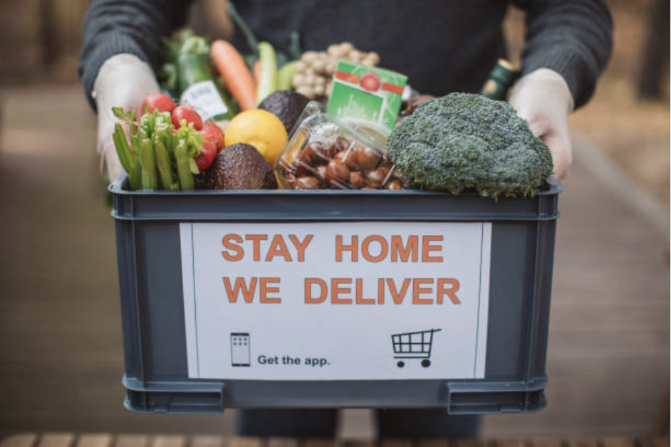

About Us
Welcome to Villager's Hub! We are dedicated to providing the best local food directly from the village to your table. Our mission is to support local farmers and deliver fresh, organic, and delicious meals to our community.
Established in 2024, our hub serves as a connection point between tradition and modern convenience.
